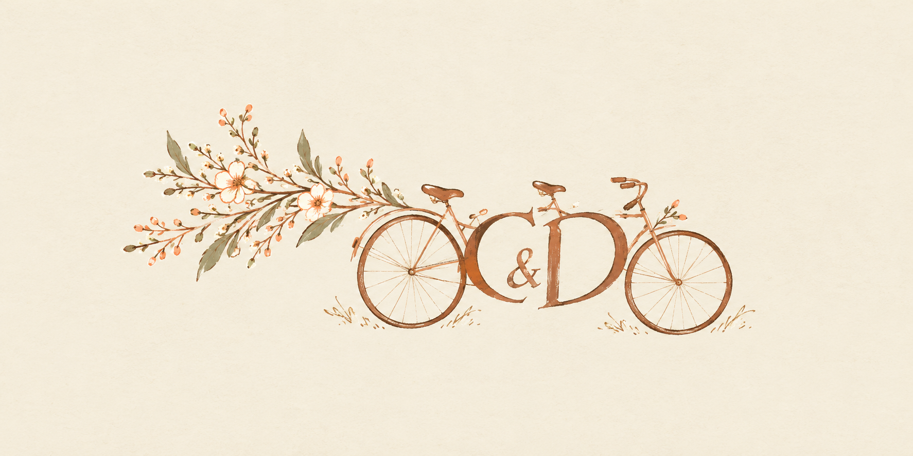
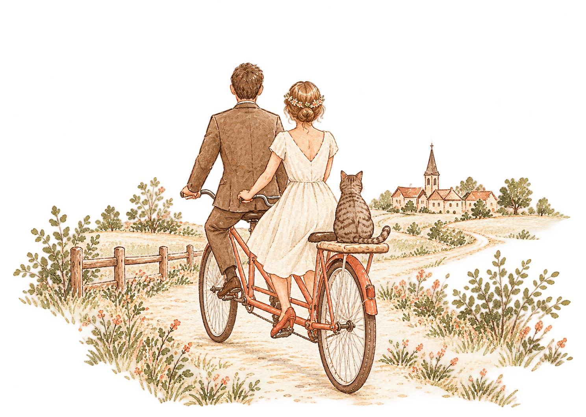
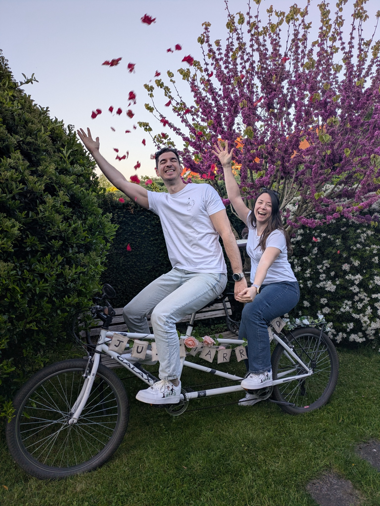
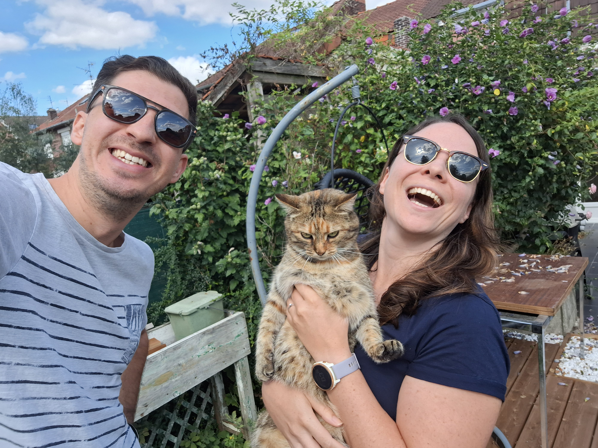
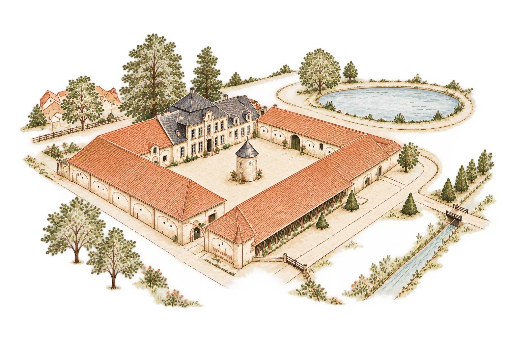

💒 Cérémonie religieuse
14h30
Église Saint-Bertulphe
62310 Fruges

24 & 25 avril 2027 · Nord de la France
Deux jours, une histoire,
et toute une vie à deux…
Deux Ch'tis d'adoption, une Kit cat, un tandem et une sacrée envie de faire la fête avec vous.
Découvrir notre mariage ↓

Un tandem, et beaucoup d'aventuresDeux Ch'tis d'adoption · une Kit cat
Daniel vient de la région lyonnaise, Claire de la région parisienne. Nous nous sommes rencontrés pendant nos études d’ingénieurs et, depuis, cela fait déjà 8 ans que nous avançons ensemble.
Au fil des années, nous avons accumulé les kilomètres à vélo, les séances de CrossFit, les projets de bricolage et quelques rénovations de maisons. Claire travaille chez Decathlon et Daniel chez Adeo / Leroy Merlin : autant dire que les idées de projets ne manquent jamais !
Nous sommes devenus, un peu par hasard et beaucoup par choix, deux Ch'tis d'adoption. Alors pour nous marier, il nous semblait évident de vous faire venir dans notre Nord : notre fief, ses paysages, sa générosité et surtout son goût de la fête.
Notre envie : un mariage original, un peu décalé, simple et joyeux — bref, un mariage qui nous ressemble.
Et parce qu'on ne pouvait pas l'oublier…
Il fait partie de notre quotidien depuis maintenant quelques années et, forcément, il s’est aussi glissé dans notre histoire… et même sur notre faire-part !
Il ne sera probablement pas au premier rang le jour J, mais il mérite bien sa petite place sur ce site.

Un week-end à partager
Deux jours pour se retrouver, rire, danser, bien manger et célébrer avec vous.
14h30
Église Saint-Bertulphe
62310 Fruges
Vin d’honneur, dîner & soirée
Domaine de la Traxène
62310 Coupelle-Vieille
On remet ça, tranquillement, pour prolonger le week-end.
Domaine de la Traxène
62310 Coupelle-Vieille

On compte sur vous !
Votre réponse nous aidera à préparer au mieux ces deux jours. Même en cas d’empêchement, dites-le-nous ❤️
Après le mariage
Daniel y a déjà passé une semaine à Tokyo et en est revenu conquis. Claire, elle, a très envie de découvrir le Japon à son tour.
Pour notre voyage de noces, nous rêvons donc d’une grande traversée du Japon, avec un mélange de culture, de randonnées, de paysages et — évidemment — de très bonnes choses à manger.
L’itinéraire reste encore à inventer. On vous emmènera avec nous ici, au fil de sa préparation.
Au fil des préparatifs, nous ajouterons nos étapes, nos envies, nos bonnes adresses et quelques photos.
À suivre…Votre présence est déjà le plus beau cadeau
Si vous souhaitez participer à notre voyage, nous avons imaginé quelques petites envies. Elles sont symboliques : aucun montant n’est imposé, chacun participe simplement comme il le souhaite.
Une belle table, de nouvelles saveurs et un toast à notre voyage.
Montant librePour traverser le Japon à grande vitesse et changer de décor.
Montant libreTemples, jardins, quartiers historiques et balades au hasard des rues.
Montant librePour prendre un peu de hauteur, respirer et mériter le dîner du soir.
Montant libreEnvie de participer ?
Participer à la cagnotte Le lien sera ajouté ici dès que la cagnotte sera créée.Pour profiter pleinement du week-end
Cette page sera complétée au fur et à mesure : hébergements, transports, stationnement et toutes les petites infos utiles.
Nous ajouterons ici nos recommandations d’hôtels, gîtes et chambres d’hôtes à proximité.
Les informations d’accès et de stationnement seront ajoutées ici.
À définir — mais l’idée reste : élégant, confortable et surtout à votre image.
Notre petit compagnon sera surtout présent dans les illustrations et dans nos histoires !
Jusqu'au grand week-end